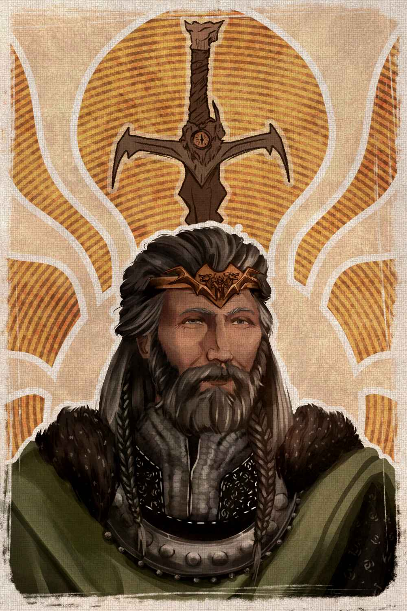

Filter by tag:
Active Filters:

King Talon Falkrest, "the Kind"
Importance:
An older man in his seventies, though appearing decades younger due to a gift of long life. Benevolent yet resolute, King Talon leads with a compassionate heart, striving always for fairness and justice. He is beloved by his subjects for his kindness and admired for his timeless wisdom. His favored weapon is Dragon's Bane.
In a world so often marred by cruelty, it takes true strength to be kind. Honor and kindness are not signs of weakness, but the greatest tools to win hearts and maintain peace…
Importance:
Loading NPCs...